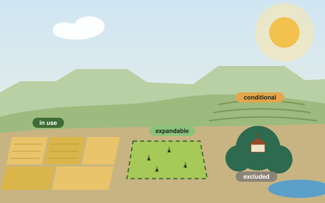
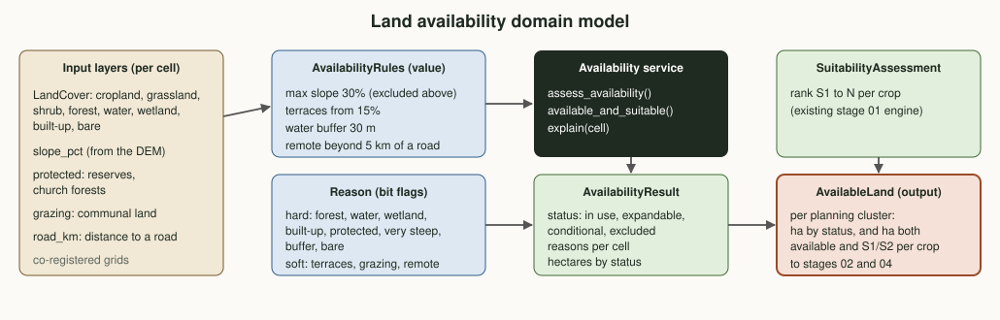
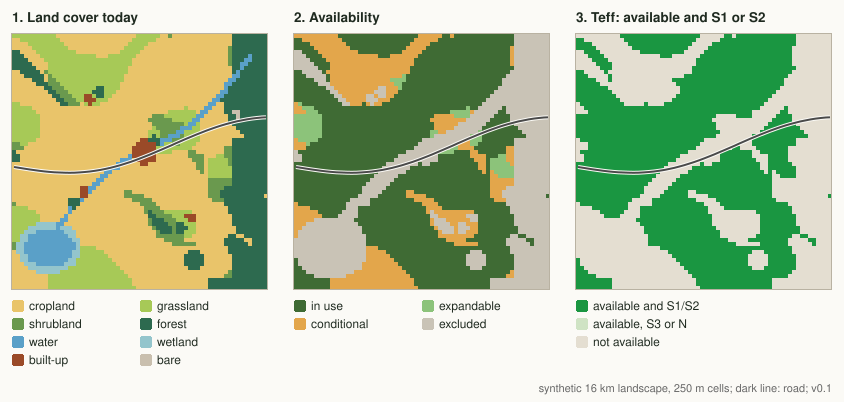

Plan · Phase 1 · Module 1Land availability
Before asking how well a crop would grow, ask whether the land may be farmed at all. Forest, water, towns, church forests, very steep slopes and river banks are taken out first; open land is checked for slopes, grazing rights and access. What remains is the land a plan can honestly count on.
Where this sits in Phase 1
Phase 1 builds the system one module at a time, each one feeding the next. Module 1 has two parts: availability (this page) and suitability (the main stage 01 page). Together they answer "which land, and how good is it?".
Why availability comes first
Analogy: a job applicant's skills versus whether they are free to take the job. Suitability measures the skills of a piece of land. Availability asks whether it is free: a deep, well-drained soil under a church forest or a lake shore is not a candidate, however good it is. A plan that skips this step promises hectares that do not exist.
Honest plans
Stage 04 plans with the land that is both suitable and available. In the demo that is only 62% of the land suitable for teff.
Explainable decisions
Every cell keeps its reasons ("excluded: forest and very steep"), so the kebele land committee can see why, and challenge it.
Protect what must stay
Forests, wetlands, river banks and rehabilitated land stay out of the plan from the start, instead of being negotiated away later.
Domain model
Five co-registered input layers go through one set of rules. The result is a status and a set of reasons for every cell, and, combined with the suitability engine, an AvailableLand record per planning cluster.

| Term | Kind | Meaning |
|---|---|---|
| LandCover | Enum | What covers the ground today, aligned with ESA WorldCover codes. |
| AvailabilityRules | Value object | The thresholds: maximum slope, terrace slope, water buffer, remote distance. Indicative, to be agreed locally. |
| Reason | Bit flags | Hard reasons exclude; soft reasons make open land conditional. A cell can carry several. |
| AvailabilityStatus | Enum | In use (current cropland), expandable (open land, no other claim), conditional (needs terraces, agreement or access), excluded. |
| AvailabilityResult | Entity | Status and reasons for every cell, with hectares and a plain-language explanation per cell. |
| AvailableLand | Output | Per planning cluster: hectares by status and hectares both available and S1 or S2 per crop. |
Rules
Hard constraints: excluded
- excluded Forest, open water, wetland, built-up land, bare rock
- excluded Protected land: reserves, church forests, area exclosures
- excluded Slope above 30%
- excluded A 30 m strip along rivers and lakes
Soft constraints: conditional
- conditional Slope 15 to 30%: terraces or bunds first
- conditional Communal grazing land: community agreement first
- conditional More than 5 km from a road: access first
Existing cropland stays in use even with a soft reason; the reason is kept as a note (for example "terraces needed").
Order of the rules
Hard reasons always win. Then current cropland is in use, and open land (grassland, shrubland) is expandable when it has no soft reason and conditional when it has one. Missing slope or road data raises an error instead of guessing.
Combine with suitability
Available land (in use plus expandable) is overlaid on the suitability classes from the main stage 01 engine. The plannable area for a crop is the land that is both available and S1 or S2.
Amhara-specific considerations
Church forests
Small forests around Orthodox churches are among the last native woodland in the highlands. They are excluded outright, whatever their soil.
Area exclosures
Degraded hillsides closed to grazing and cultivation for rehabilitation are protected land in this model, so a plan never undoes years of restoration.
Communal grazing
Livestock is part of almost every farm. Converting common grazing land needs the community's agreement, so it is conditional, never simply expandable.
Use rights, not ownership
Land is held under use-right certificates. "Expandable" marks a candidate to discuss with the kebele land committee, never land to be taken.
Terraced slopes
Soil and water conservation campaigns have terraced many slopes. Existing terraces lower the effective risk; their mapping is a planned input.
Rainy-season access
Earth roads close in the main rains. Remoteness here uses distance to an all-weather road (stage 11 refines it with seasonal routes).
Data sources
| Layer | Source | Resolution | Used for | Access |
|---|---|---|---|---|
| Land cover | ESA WorldCover; Dynamic World (Sentinel-2) | 10 m | Cropland, forest, water, built-up, open land | Open |
| Slope | Copernicus DEM GLO-30 | 30 m | Very steep and terrace bands | Open |
| Rivers and lakes | Land cover water class; HydroRIVERS | 10 to 90 m | Water buffers | Open |
| Roads | OpenStreetMap; woreda road inventory | lines | Distance to an all-weather road | Open / by agreement |
| Protected areas | World Database on Protected Areas; regional and woreda records | polygons | Reserves, church forests, exclosures | Open / by agreement |
| Grazing and holdings | Kebele land administration, participatory mapping | polygons | Communal grazing, use rights | Restricted, aggregated only |
Demo on the synthetic landscape
The same made-up 16 km landscape as the suitability demo (25,600 ha), now with land cover, a lake and river, a town and three villages, four church forests, communal grazing in the wet valley and around villages, and one road. No real land.

Where the land goes
Share of the 25,600 ha by availability status.
Suitable is not the same as available
S1 plus S2 land: the bar is all of it, the green part is also available (in use or expandable).
| Crop | S1 + S2 anywhere | S1 + S2 and available | Share | Available S1 | Available S2 |
|---|---|---|---|---|---|
| Teff | 23,075 ha | 14,256 ha | 62% | 9,494 ha | 4,762 ha |
| Bread wheat | 19,912 ha | 13,162 ha | 66% | 8,806 ha | 4,356 ha |
| Maize | 19,469 ha | 13,038 ha | 67% | 7,575 ha | 5,462 ha |
Try it: is this land available?
Describe one piece of land. The same rules as assess_availability() decide its status and list every reason.
Indicative thresholds (30% slope, 15% for terraces, 30 m water buffer, 5 km to a road), to be agreed with the woreda office.
Output: what stages 02 and 04 receive
One record per planning cluster. Stage 02 (water) only looks for water for land that is available; stage 04 (planning) only allocates hectares that are both available and suitable.
{
"cluster_id": "DEMO-CLUSTER",
"hectares_by_status": {"IN_USE": 13525, "EXPANDABLE": 731, "CONDITIONAL": 3944, "EXCLUDED": 7400},
"suitable_available_ha": {
"teff": {"S1": 9494, "S2": 4762},
"bread_wheat": {"S1": 8806, "S2": 4356},
"maize": {"S1": 7575, "S2": 5462}
},
"rules_version": "0.1"
}What comes next
Validate
Compare the cropland and forest layers with field checks in the pilot kebeles; agree the thresholds with the woreda office and land committees.
Real layers
Replace the synthetic layers with WorldCover, the DEM, roads, protected areas, exclosures and participatory grazing maps for the pilot woreda.
Module 2
Water availability mapping: where water can come from for the available land, month by month (stage 02).
Code on this branch
src/land_intel/availability.py domain model and rules (statuses, reasons, AvailableLand)
src/demo_availability.py synthetic demo: maps, hectares, available and suitable land
tests/test_availability.py unit tests for every rulegit switch stage/01-land-intelligence
python3 src/demo_availability.py
python3 tests/test_availability.py